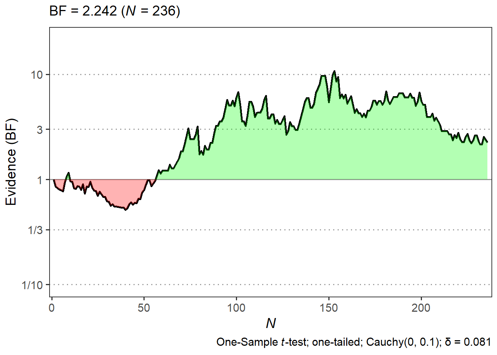
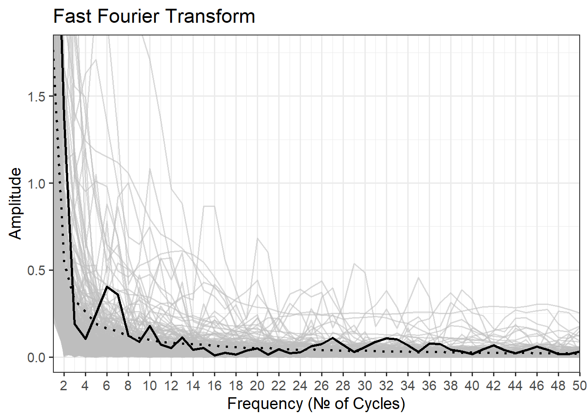
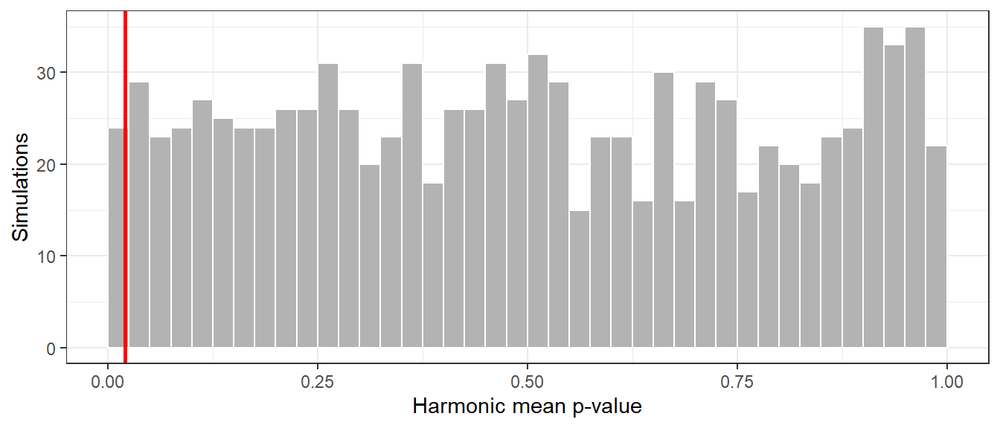

Empirical research on Micro-Pk often times reports a decline of initially present effects (Colborn, 2018). This phenomenon can be explained either by an initial false positive followed naturally by a regression to the true mean. Alternatively, it fits the predictions of the Model of Pragmatic Information, which states that novel, autonomous effects are inversely linked to their confirmation or detectability (Lucadou et al., 2007). This would result in a decrease of effect size over time, since accumulated data means more power and possibility of convincing confirmatory results (Maier et al., 2022).
The Change of Evidence (CoE) measures were developed to detect unusual patterns in Bayesian evidence accumulation that might indicate such volatile effects (Dechamps, 2019). They work by comparing observed characteristics of the evidence trajectory against empirical null distributions generated through Monte Carlo simulation.
Bayesian Analysis
In Bayesian statistics, test results often times are reported as Bayes Factors (BF). A BF characterizes the relative evidence for two hypotheses, e.g. the presence of an effect versus the absence of an effect. A BF of 1 indicates equal evidence for both hypotheses, a BF > 1 indicates evidence for the presence of an effect (H1), and a BF < 1 indicates evidence for the absence of an effect (H0). A BF is symmetrical around 1, meaning that a BF of 0.5 indicates the same evidence for H0 as a BF of 2 indicates for H1. Similar to the convetion of using a p-value of 0.05 as a threshold for significance, a BF can be classified into different categories of evidence strength, whereas a BF > 3 is considered moderate evidence, and a BF > 10 is considered strong evidence (Jeffreys, 1961)
\[ BF = \frac{P(D|H1)}{P(D|H0)} \]
An advantage of Bayesian testing is that it allows for the continuous updating of evidence as new data comes in. In contrast to using p-values, there is no need for an a priori power analysis. Instead a desired level of evidence can be set, and the data collection can be stopped as soon as this level is reached. Even then, data can be added to further substantiate the evidence without the risk of inflating error rates, since the BF is consistent over time.
For each study condition we compute sequential Bayes Factors across the course of data collection. The BF at each point quantifies the relative evidence for the effect hypothesis (deviation from mean chance expectation) versus the null hypothesis (chance performance), using the same prior as the endpoint analysis (a Cauchy(0, 0.1) prior unless a study specified otherwise). The resulting trajectory shows how evidence evolves as data accumulate, revealing patterns that the endpoint analysis alone would obscure.
The possibility of monitoring the change of evidence over time is especially useful in the context of Micro-Pk research, where an effect volatility could be assumed. If this was the case, the BF would not be consistent, but dependent on the level of confirmatory power. This would result in unusual patterns of evidence change, which could be detected by comparing the empirical BF to a set of simulated BFs as is done with the following change of evidence-measures.
Simulations
To assess whether an observed trajectory characteristic exceeds chance expectation, we generate empirical null distributions through Monte Carlo simulation. For each study condition we simulate 1,000 datasets using the same data-generating process as the empirical data (the same number of trials per participant, chance level, test direction and prior) but with the effect size set to zero. Each simulated dataset yields a Bayes Factor trajectory, from which we compute the same summary statistics as for the empirical data. The distribution of these simulated statistics is the null distribution against which the observed values are compared, and each p-value below is the share of simulations with an equal or more extreme value.
The simulation sets are built from pre-recorded output of a quantum random number generator of the kind used in the studies themselves, so the null distribution reflects the stochastic properties of the actual measurement system rather than idealized mathematical randomness.
All examples on this page use the Incongruence Exp condition (N = 236), whose sequential analysis is summarized below.
print(bf)
Sequential Bayesian Testing
--------------------------------
Test: One-sample t-test (parametric)
Sample size: 236
Final Bayes Factor: BF10 = 2.242; BF01 = 0.446
Prior: Cauchy(0, 0.1)
Alternative hypothesis: greater
Frequentist: t-value = 1.774; p = 0.039; d = 0.115
Bayesian δ: 0.081, 95% CI [-0.026, 0.208]
Measures
Maximum BF
The Maximum BF captures the highest Bayes Factor reached at any point during data collection, regardless of the final outcome. It operationalizes the prediction that volatile effects produce genuine evidence accumulation before they decline, reaching peaks higher than random fluctuation typically produces. For each condition we record the maximum BF and the sample size n at which it occurred. The empirical p-value is the share of simulations whose Maximum BF is equal to or greater than the observed one.
Figure 1: Empirical Bayes Factor (black) and 100 of the simulated Bayes Factor trajectories (grey) for the Incongruence Exp condition. The red point marks the maximum Bayes Factor.
maxbf(bf, sims)
*** Change of Evidence Results ***
Number of Simulations: 1000
-----------------------------------
Max BF: 10.716 at N = 153
Sims with ≥ this BF: 3.4 %
Energy of BF
The BF Energy quantifies the overall orientation of the evidence trajectory relative to equipoise (BF = 1). It is the integral of the BF trajectory, with areas where the BF exceeds 1 contributing positively and areas below 1 contributing negatively. It captures whether evidence generally favored the effect hypothesis across the whole observation sequence, even if the final BF was equivocal. Positive values indicate an overall orientation toward the effect hypothesis, negative values toward the null. The empirical p-value is the share of simulations whose Energy is equal to or greater than the observed one.
n <-seq_along(bf$BF)plotbf(bf, show_annotations =FALSE) +geom_ribbon(aes(x = n, ymin =pmin(bf$BF, 1), ymax =1), fill ="red", alpha =0.3) +geom_ribbon(aes(x = n, ymin =1, ymax =pmax(bf$BF, 1)), fill ="green", alpha =0.3)

Figure 2: The green area indicates the positive energy (BF directed towards H1), the red area the negative energy (BF directed towards H0).
energybf(bf, sims)
*** Change of Evidence Results ***
Number of Simulations: 1000
-----------------------------------
Energy: 564.134
Simulated Energy: M = -52.415 , SD = 179.955
Sims with ≥ this Energy: 1.4 %
Frequency Analysis
The FFT Amplitude Sum assesses oscillatory structure in the evidence trajectory. If effects accumulate, dissipate and potentially reappear, the trajectory oscillates between phases, producing pronounced periodic structure that differs from both monotonic accumulation and random fluctuation. We compute the Fast Fourier Transform of the BF trajectory with a sampling rate of 1 over the number of data points, consider only the first half of the spectrum because of its symmetry, and sum all amplitudes. Higher sums indicate more pronounced oscillation. The empirical p-value is the share of simulations whose Amplitude Sum is equal to or greater than the observed one.
plotfft(fftcreate(bf$BF), sims.df = sims)

Figure 3: The Fast Fourier Transform of the Bayes Factor curve. The x-axis represents the frequency of the oscillations, the y-axis the amplitude. Only the first 50 frequencies are displayed.
ffttest(fftcreate(bf$BF), sims)
*** Change of Evidence Results ***
Number of Simulations: 1000
-----------------------------------
Amplitude Sum: 9.89
Simulated Amplitude Sum: M = 2.307 , SD = 3.742
Sims with ≥ this Amplitude: 2.3 %
Aggregate CoE p-Value
Because the three measures capture related aspects of the same trajectory, they are highly intercorrelated. To avoid testing the same information three times while keeping each measure’s sensitivity, they are combined into a single aggregate CoE p-value using the harmonic mean p-value [HMP; Wilson (2019)]. The HMP is designed for combining dependent tests. Bonferroni-type corrections assume independence and become overly conservative when tests are correlated, whereas the HMP accounts for the information the measures share. A condition then yields one omnibus test of whether its trajectory shows non-random CoE patterns, while remaining sensitive to any of the three signatures.
The methods that later combine conditions (inverse chi-square, Fisher) assume p-values that are uniformly distributed under the null. Because the three measures are correlated, we checked this property for the HMP directly against the simulations. Every simulated trajectory was scored exactly like the data, with its three statistics ranked against the other 999 simulations of the condition and their harmonic mean taken. This yields the null distribution of the HMP for each condition (Figure 4).
ggplot(data.frame(h = cal$hmp_null), aes(h)) +geom_histogram(binwidth =0.025, boundary =0, fill ="grey70", colour ="white") +geom_vline(xintercept = cal$hmp_obs, colour ="red", linewidth =1) +labs(x ="Harmonic mean p-value", y ="Simulations") +theme_bw(base_size =11)

Figure 4: Null distribution of the harmonic mean p-value for the Incongruence Exp condition (1,000 simulations), with the observed value in red.
For Incongruence Exp, the aggregate CoE p-value is 0.021.
Across all 52 conditions, the HMP of the null simulations fell at or below .05 in 5.1% and at or below .01 in 1.1% of cases, close to the nominal 5% and 1%. With three measures this strongly correlated, the HMP behaves like a single p-value under the null, and it is used directly as the aggregate CoE p-value.
The aggregate CoE p-values are then combined across conditions in the CoE meta-analysis, using both weighted (inverse chi-square) and unweighted (Fisher’s) methods.
The ‘changeofevidence’ Package
All Change of Evidence analyses were conducted with the changeofevidence R package, which is available on Github and allows independent replication of all reported analyses.
Jeffreys, H. (1961). The theory of probability (Third). Oxford University Press.
Lucadou, W. von, Römer, H., & Walach, H. (2007). Synchronistics phenomena as entanglement correlations in generalized quantum theory. Journal of Consciousness Studies, 14(4), 50–74.
Maier, M. A., Dechamps, M. C., & Rabeyron, T. (2022). Quantum measurement as pragmatic information transfer. Journal of Anomalous Experience and Cognition, 2(1), 16–48. https://doi.org/10.31156/jaex.23535
Wilson, D. J. (2019). The harmonic mean p-value for combining dependent tests. Proceedings of the National Academy of Sciences, 116(4), 1195–1200. https://doi.org/10.1073/pnas.1814092116